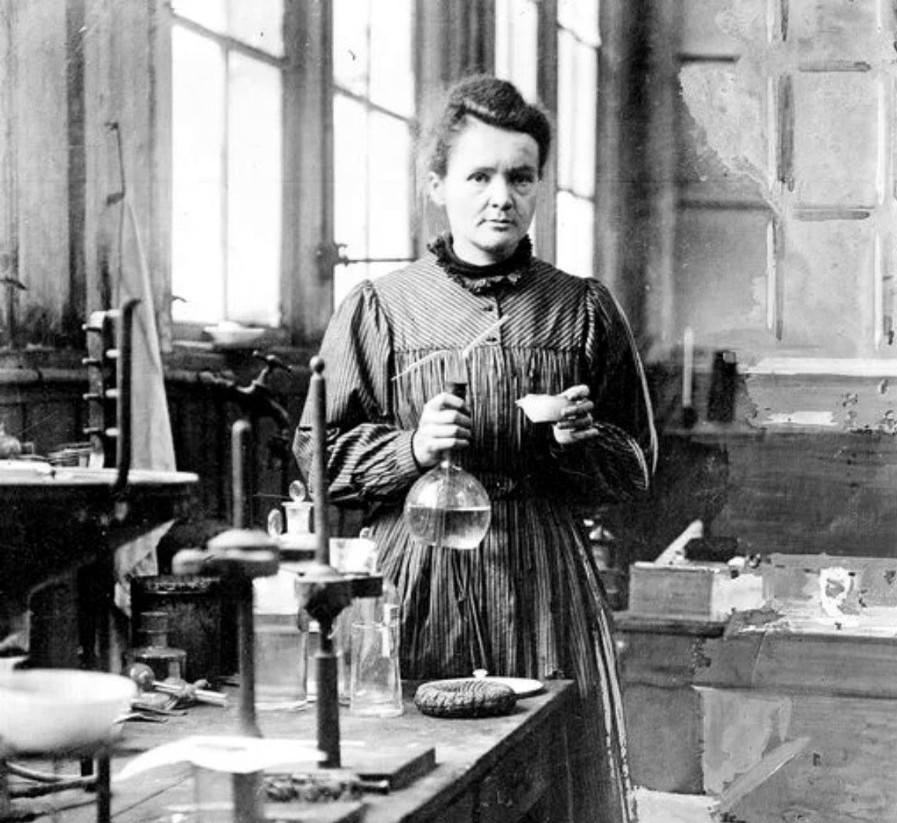

IMPORTANCE OF WOMEN EMPOWERMENT
By Anna Sikora
HOME
GO TO
How women rights are violated in the world?
Women who changed the world: Female in technology and science
How to support women?
Women Empowerment Principles
CONTACT
Women who changed the world: female in technology and science
There are many women on this world who changed the entire view and perspective of female gender by accomplishment of many great things. All those women has had huge impact on the world of history. It is worth distinguishing here:
Marie Curie

According to www.nobelprize.org Marie Curie, Nobel Prize winner, was born in Warsaw, Poland in 1867. She was a physicist and chemist, the first woman to win the Nobel Prize and the first and only one to win this award twice in two scientific fields. She made unusual discoveries in the field of physics and chemistry, including the discovery of polonium and radium. She had honorary doctorates from universities, including in Edinburgh, Geneva, Manchester. During the First World War, she used her inventions, to take X-rays for a soldiers in a field hospital. She also together with doctors and her daughter, trained radiology technicians during this time.
Margaret Heafield Hamilton
Born in 1936. Computer scientist, software engineer and entrepreneur. She was the director of software engineering at the Massachusetts Institute of Technology's Instrumentation Laboratory. Together with her team, she developed the software for the on-board space program "Apollo". In 1986 she founded and became the CEO of Hamilton Technologies, Inc., in Cambridge, Massachusetts. The company was founded around universal language systems based on its Before the Fact Development (DBTF) paradigm for system and software design.
Ada Lovelace
Born in 1815, British mathematician and poet, known primarily for her publications on Charles Babbage's mechanical computer, known as the analytical machine. The thesis contains notes, including the first published algorithm written with the intention of being executed on a machine. For this reason, she is sometimes considered the first programmer.
Maryam Mirzachani
Born in 1977 in Tehran, died in 2017. Iranian professor of mathematics. Her research topics included in Teichmüller space, hyperbolic geometry, ergodic theory and symplectic geometry. She was the first woman in history to be awarded the Fields Medal.
Women in technology statistics article:
CIO
Women Empowerment Principles
There are many organization who Support the principles of women's empowerment. These principles are the result of a collaboration between the UN Global Compact and UN Women and have been adapted from Calvert Women's Principles.
READ
How to support women?
Referring to the World Vision, There are 7 ways to empower women and girls around the world in simple way.
READ
Women who changed the world: Female in technology and science
There are many women
in this world who's changed the entire view and perspective of female gender by accomplishment of many great things.
READ